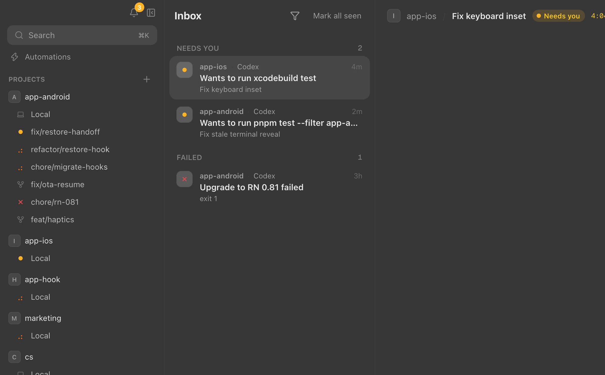
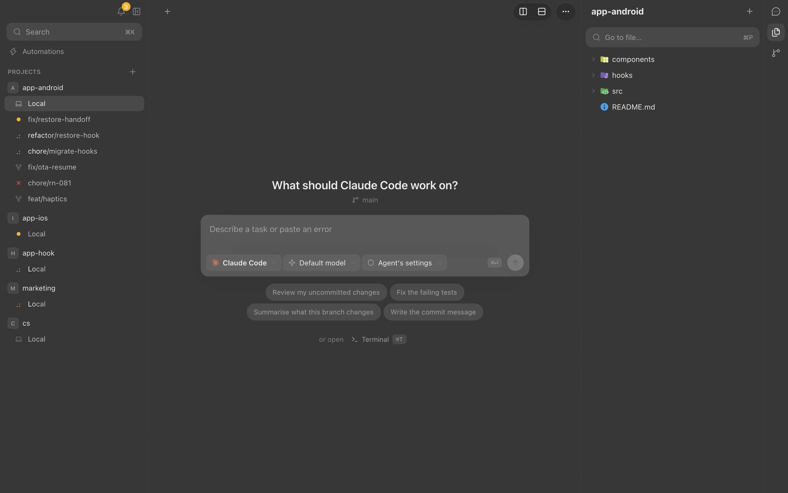
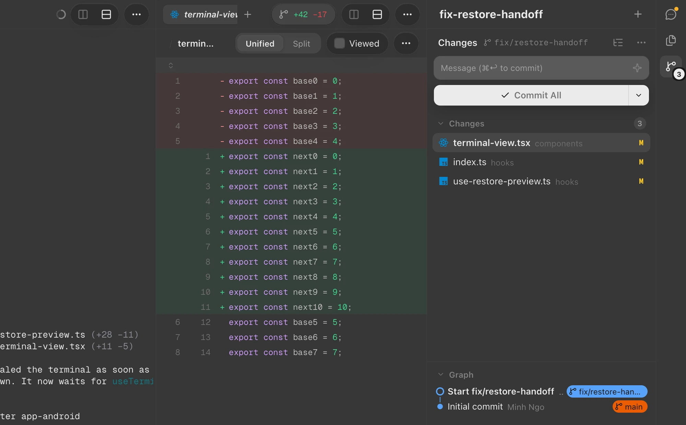
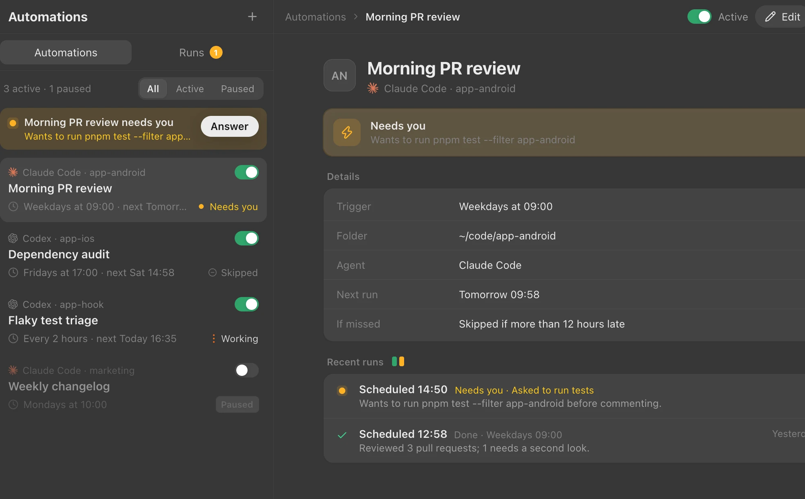

01 — Inbox
Know who needs you
Sessions waiting on an answer surface in the sidebar, the inbox, the Dock badge and notifications. Jump straight to the one asking.

Watch and drive the Claude Code and Codex sessions running on your Mac, from the desktop app and your phone.
Download for Mac
Run claude and codex in real terminals, grouped by project and git worktree. Anywhere tells you which ones are working, which need you and which are done.
Sessions waiting on an answer surface in the sidebar, the inbox, the Dock badge and notifications. Jump straight to the one asking.

Browse files, read diffs and commit without leaving the session that made the change.

Automations start Claude Code or Codex on a schedule, and tell you when a run needs a decision.

Spin up a git worktree and an agent in it, with your setup script run for you.
Answer an agent from the couch. Your phone reaches your Mac over Tailscale.
A daemon owns the terminals, so agents keep running when you close the window.